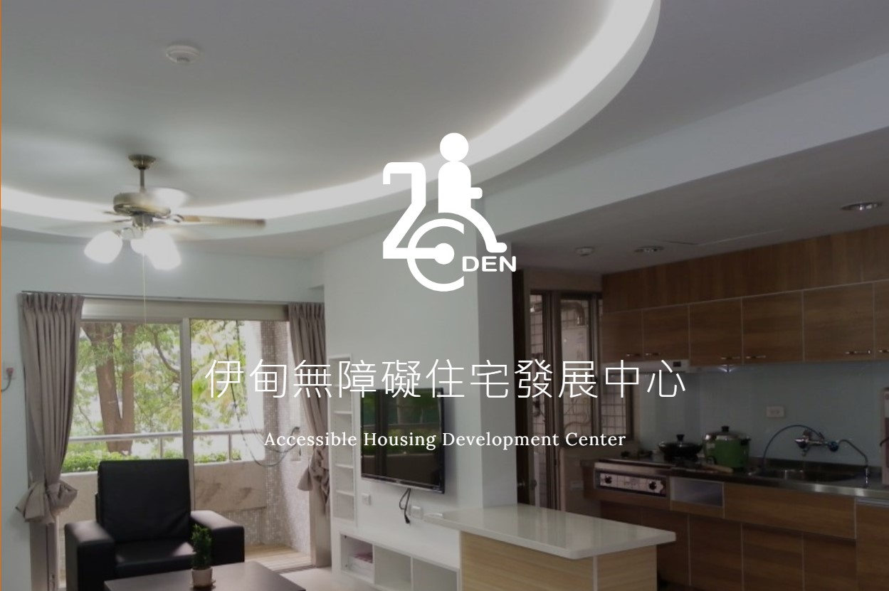

伊甸愛心棧
台北和信醫院宗教師盧俊義牧師，深知台東當地醫療資源缺乏，癌症病友需遠赴外地就醫，容易延誤治療，甚而無力負擔交通與住宿費用被迫放棄，因此發起「送愛到台東」活動。 活動感召醫師、護理師響應前往台東獻身，先以台東基督教醫院為諮詢及篩選窗口，再北送台北和信醫院，協助患者享有較快速便捷的醫療服務。 2014年伊甸基金會透過響應「送愛到台東」活動的愛心房東吳老師介紹，與活動發起人盧俊義牧師共同推動成立伊甸愛心棧。 提供台北市南海路郭伯伯之家(全台首宗附負擔捐贈-以房養老案例)及新北市淡水兩處房舍，提供遠地就醫的癌友免費住宿服務。 也實現了郭伯伯將房舍捐贈伊甸，以服務更多弱勢朋友的心願。

棧點概況
伊甸愛心棧目前全台共有4個棧點，分別是淡水棧、南海棧、台中棧及高雄鹽埕棧，已服務359人次，提供5,225天的住宿使用。
未來，我們希望邀請更多愛心房東加入愛心棧的服務，透過伊甸將閒置房舍轉做愛心棧，給更多遠地就醫的癌友使用。我們期待您一同來響應 !